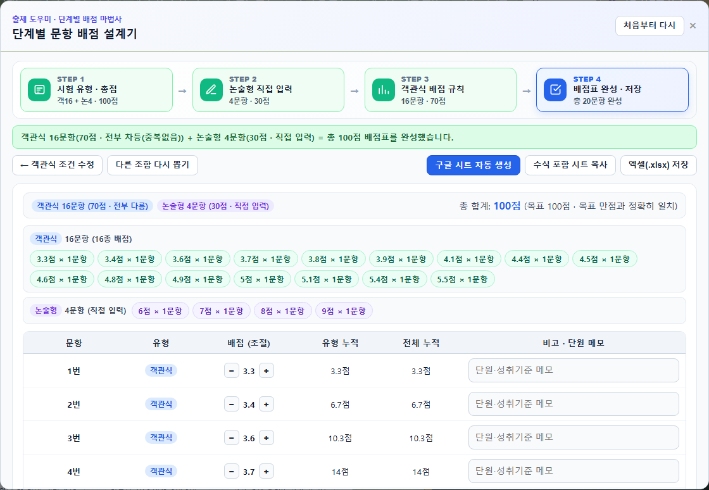

STEP 1
시험 유형(혼합형 / 100% 객관식) · 총점 · 문항 수 선택
객관식 + 논술형(주관식) 시험과100% 객관식 전용 시험중 선택합니다.- 자주 쓰는 출제 프리셋(예:
100점 · 객16(70) + 논4(30))을 누르거나 만점·문항 수를 직접 입력한 뒤 다음 단계로 넘어갑니다. - 100% 객관식 전용 시험을 고르면 STEP 2(논술형 입력)는 자동으로 생략됩니다.
STEP 2
논술형(주관식) 배점 직접 입력
- 서술 1번, 서술 2번… 각 논술형 문항의 점수와 메모를 직접 입력하거나
빠른 입력 도우미로 한 번에 채웁니다. - 논술형 합계를 제외한 남은 객관식 목표 총점과 평균이 하단에 자동으로 계산됩니다.
STEP 3
객관식 차등배점 방식 · 점수 폭 · 배치 순서 선택
전부 차등배점(중복 없음),고른 차등배점,단계 차등(하·중·상),동배점 우선중 원하는 방식을 고릅니다.평균 기준 자동 추천을 누르면 선택한 배점 방식과 간격(0.1~1점)에 딱 맞는 최저·최고 점수를 자동 계산해 줍니다.
STEP 4
완성된 배점표 확인 · 미세 조절 · 구글 시트/엑셀 저장

- 객관식·논술형별 문항 개수 분포와 누적 합계를 확인하고,
다른 조합 다시 뽑기나 문항별−/+로 미세 조절합니다. 구글 시트 자동 생성,수식 포함 시트 복사(=SUM, =SUMIF),엑셀(.xlsx) 저장으로 원안지 작업에 바로 활용합니다.